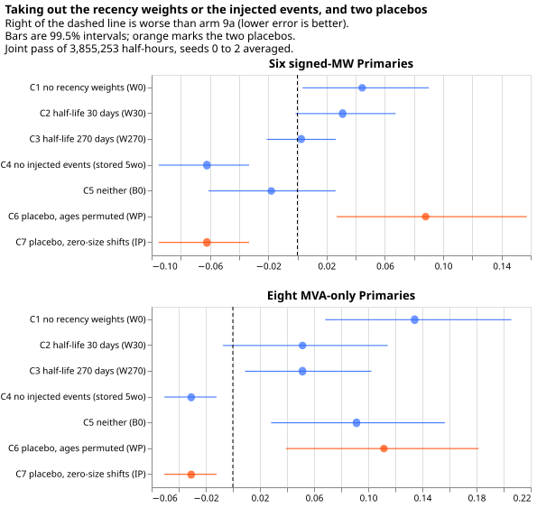
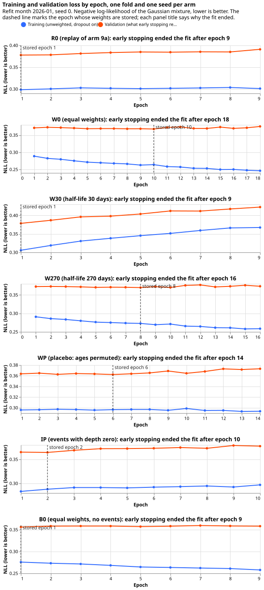
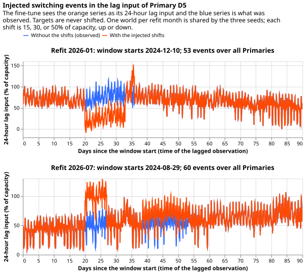
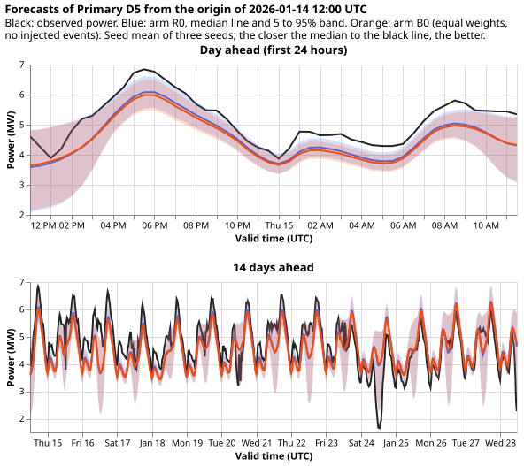
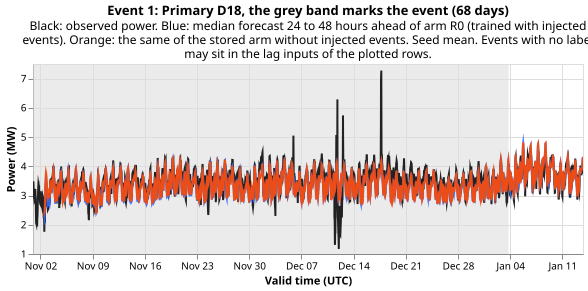
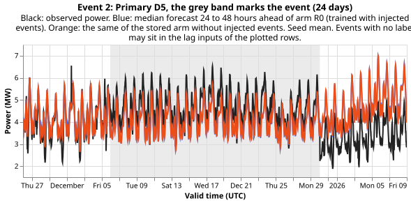
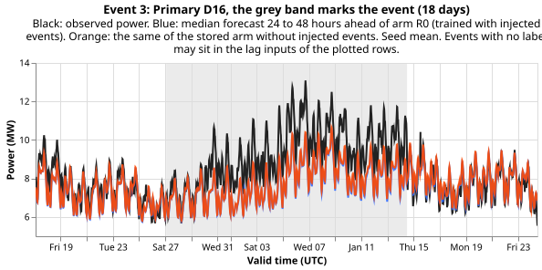
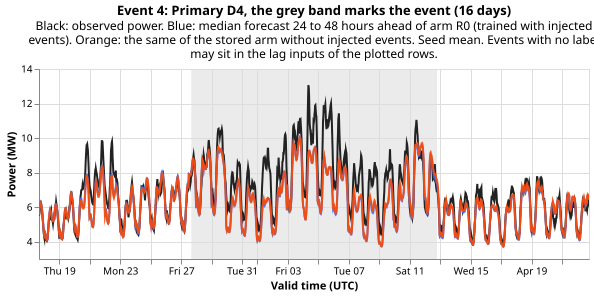
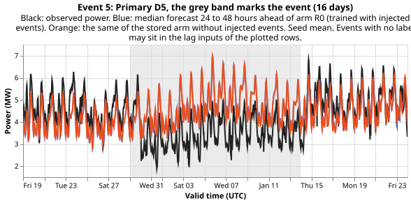
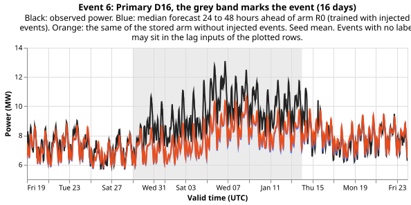

In the Primaries' step-5 demand network refitted monthly, do the 90-day recency weights and the injected switching events of its final fine-tune each improve the forecast, and does a shorter or longer half-life do better?
The step-5 demand neural network already trains with two choices, recency weights and injected
switching events, and this experiment took each choice out and compared the forecasts. The neural
network forecasts the power drawn at 16 Primary substations, and experiment
677 (the
build-up of this demand neural network, one component at a time) refits the network every month.
The network's final fine-tune weights each training row by 0.5 ** (age_days / 90), so a row loses
half its weight every 90 days of age. The fine-tune also injects synthetic switching events, each a
level shift added to the lag inputs (past demand fed in as input) and never to the target. We
refitted the final fine-tune once per month for 12 months, for each of 7 arms (a replay of arm 9a
and 6 variants with the weights or the events changed) and each of 3 random seeds. We scored every
arm on experiment 677's one-year backtest. Taking out the weights raised the forecast error. Taking
out the events lowered the error slightly but made the forecast copy more of an injected shift, so
no variant replaces arm 9a's training.
Verdict: supported under the pre-registered rule, with a recency result that is fragile. The
pre-registered rule says the 90-day weights help when removing them raises the error and when a
placebo with randomly permuted ages also raises the error, both relative to R0. Both held at both
Primary groups, and the sign agreed in all three seeds.
Four readings weaken the verdict. The lower limit of C1 at the six is only +0.004. Leaving out
D14 or D16 moves C1 at the six to +0.026 or +0.025 with an interval that crosses zero, and the gain
at the eight rests on D8 and D22. The pre-registered reading of the eight without D8 holds for C1
(+0.066, +0.008 to +0.135) but fails for the placebo C6 (+0.039, -0.009 to +0.092), so a gate on
that reading alone would give inconclusive at the eight. The audit, a fresh agent that re-derived
the numbers from the raw forecasts, confirmed all the point estimates.
No variant meets the pre-registered rule for replacing arm 9a. This result gives no reason to change arm 9a's training before it is used in production.
Results
The score is the normalised mean absolute error of the median forecast, in points of capacity; lower is better. CRPS is the continuous ranked probability score of the whole forecast distribution, in the same unit. One point means a median forecast that is on average 1% of a Primary's capacity away from the observed power. Every contrast below is the variant minus R0 (the replay of arm 9a), so a positive number means the variant is worse. The six signed-MW Primaries are the six whose meters record the direction of flow. The eight MVA-only Primaries have apparent-power meters that hide reverse flow, so the two groups are scored separately. D15 and D18 are reported only, because their history is short and noisy.
| Arm | What changed from arm 9a | Six, MAE | Eight, MAE | Six, CRPS | Eight, CRPS |
|---|---|---|---|---|---|
| R0 | nothing (replay) | 5.62 | 6.70 | 3.24 | 3.70 |
| W0 | equal weights | 5.66 | 6.83 | 3.27 | 3.76 |
| W30 | half-life 30 days | 5.65 | 6.75 | 3.27 | 3.74 |
| W270 | half-life 270 days | 5.62 | 6.75 | 3.25 | 3.72 |
| WP | placebo: ages permuted | 5.71 | 6.81 | 3.30 | 3.75 |
| 5wo (stored) | no injected events | 5.56 | 6.67 | 3.20 | 3.68 |
| IP | placebo: zero-size shifts | 5.56 | 6.67 | 3.20 | 3.68 |
| B0 | neither | 5.60 | 6.79 | 3.23 | 3.74 |
Reproduction gate: arm 9a scores 7.3946 (95% interval 7.1369 to 7.6713) over all 16 Primaries on the 3,879,313 half-hours of experiment 677's joint pass, as published. The contrasts use the 3,855,253 half-hours that the new scorer shares with that set. The 24,060 rows that drop out belong to D15 and D18 between 2025-12 and 2026-03, because the cleaned power table was rewritten after experiment 677 ran. Arm 9a scores 7.3646 on the shared rows. R0 equals arm 9a to float rounding (at most 9e-7 of capacity per half-hour).

| Contrast (variant minus R0) | Six, MAE | Eight, MAE |
|---|---|---|
| C1 equal weights (W0) | +0.044 (+0.004, +0.090) | +0.134 (+0.068, +0.206) |
| C2 half-life 30 days (W30) | +0.031 (-0.001, +0.067) | +0.051 (-0.007, +0.114) |
| C3 half-life 270 days (W270) | +0.003 (-0.021, +0.026) | +0.051 (+0.009, +0.102) |
| C4 no injected events (5wo) | -0.062 (-0.095, -0.033) | -0.031 (-0.051, -0.012) |
| C5 neither (B0) | -0.018 (-0.061, +0.026) | +0.091 (+0.028, +0.157) |
| C6 placebo, ages permuted (WP) | +0.088 (+0.027, +0.157) | +0.112 (+0.039, +0.182) |
| C7 placebo, zero-size shifts (IP) | -0.062 (-0.095, -0.033) | -0.031 (-0.051, -0.012) |
| C8 IP minus 5wo | under 2e-8 | under 2e-8 |
The 90-day weights help at both groups, and most at D15 and D18, whose histories are shortest. C1 is positive at both groups. At D15 and D18 (reported only) C1 is +1.80 and +0.39. The 30-day half-life lowers D15's error by 1.75 (-2.81 to -0.75) and D18's by 0.18. The same half-life raises the error at 11 of the 16 Primaries and lowers it at five (D15, D18, D16, D22, and D21). A half-life chosen separately for each Primary may therefore beat a single half-life for all Primaries. This experiment did not test a half-life per Primary.
Taking out the injected events lowers the error but increases the copying of shifts. C4 is negative at both groups, and its interval stays below zero whichever one Primary is left out. The held-out bank of injected shifts shows the trade-off: the forecast copies 0.071 of an injected shift in arm 9a (seed spread 0.006) and 0.126 without injection (0.004). The pre-registered rule for replacing arm 9a requires a copied share no more than 0.02 above arm 9a's, so the injection-free arm does not replace it. Equal weights also lower the copied share (W0 0.059, W30 0.083), so removing the weights trades a higher error for less copying. Inside the 10 logged events of more than 7 days, C4 is -0.142 (-0.245 to -0.022) on 105,500 half-hours. In the 7 days after an event ends, C4 is +0.170 (-0.022 to +0.363) on 32,116 half-hours. The logged events therefore show no gain from injection, and the case for keeping it rests on the synthetic bank, which comes from the same generator that R0 trained on.
| Scenario of the 10 logged events (C1, C4) | All rows | Outside events | Inside events | 7 days after |
|---|---|---|---|---|
| C1 equal weights minus R0 | +0.205 (+0.123, +0.295) | +0.050 (-0.004, +0.101) | +0.136 (-0.235, +0.461) | +0.221 (-0.139, +0.805) |
| C4 no events minus R0 | -0.061 (-0.083, -0.040) | -0.073 (-0.111, -0.037) | -0.142 (-0.245, -0.022) | +0.170 (-0.022, +0.363) |
NGED's logs may miss events, so the clean-lag rows may hold events no label covers, and the inside and after intervals are probably optimistic.



Six of the twelve event plots follow. Each shows the observed power and the 24 to 48 hour ahead median of R0 and of the injection-free arm around one logged event of a Primary.






Checks
- Predictions: C1 at the six (+0.044), C4 at both groups, and C5 at the six fell inside the
registered ranges. C1 at the eight (+0.134 against 0 to +0.05), C2 at the eight (+0.051 against a
ceiling of +0.05), C3 at the eight (+0.051 against under +0.04), C5 at the eight (+0.091), and the
placebo C6 (+0.088 and +0.112, where the registration said within 0.02 of C1) fell outside. The
audit's explanation for C6 is that the permuted weights keep arm 9a's effective share of about 35%
of rows but put the heavy weights on random calendar months, so the placebo trains on a seasonally
mismatched sample and is worse than equal weights at the six (C6 minus C1 is +0.044, interval
+0.002 to +0.087). - Median minus mean forecast per Primary: the check is approximate, because
the mean is estimated from the 11 quantiles by the midpoint rule, and the values run from -6.8 to
-0.06 across the arms and Primaries. Only differences between arms are informative. The table is
private (
scores/summary/median_minus_mean.csv). - MAE beside CRPS: the two metrics agree in sign for C1, C4, and C6 at both groups. C2 at all 16 Primaries has an MAE interval below zero (-0.067, -0.131 to -0.002) and a CRPS interval that crosses zero (-0.015), which D15 and D18 cause. - Fine-tune length: the stored epoch differs between arms, so C1, C2, and C3 compare weightings of different training length. Across the 36 fits per arm, the mean stored epoch and the share stored at epoch 1 are 1.7 and 72% for R0, 6.2 and 14% for W0, 1.1 and 92% for W30, 5.6 and 25% for W270, 1.9 and 64% for WP, 1.2 and 83% for IP, and 2.6 and 44% for B0. WP is close to R0 in length, so C6 is the cleaner test of the weights. The placebo shows that weights on random months are worse than weights on the recent months. It cannot separate recency from nearness in the season, because the recent months are also the nearest in the season. - Placebo contrasts: C9 (WP minus W0) is -0.023 (-0.090 to +0.036) at the eight, so the placebo is worse than equal weights at the six only. C6 at the eight without D8 is +0.039 (-0.009 to +0.092). - Intervals: the 7-day blocks of origin days are pre-registered, but one fitted network per seed serves a whole refit month, so a training choice varies over 12 refit months. The intervals are therefore probably too narrow, and C1 at the six is the reading most likely to cross zero. The 3 seeds share frozen stages 1 and 2 and one injected world, so the agreement of signs across seeds is weak evidence. The per-Primary, leave-one-out, and scenario readings carry no correction for multiple comparisons. - Audit triggers that fired: trigger 2 (C1 at the eight and the placebo C6 contradict the prediction) and trigger 4 (leaving out D14 or D16 moves C1 at the six to +0.026 and +0.025 with intervals that cross zero). A fresh Sonnet agent re-derived C1, C4, and C6 from the raw fit files with its own code and matched every point estimate to 0.0001 and every interval limit to 0.004. It found no error. It added that C1 at the eight without D8 and D22 is +0.016 (-0.034 to +0.065) and that the fine-tune is one epoch in 72% of arm 9a's fits. The pre-registered verdict stands, and these two findings are post hoc readings. - The zero-size-shift placebo: arm IP reproduces the injection-free arm 5wo to 8e-7 of capacity, as expected when the shifts are zero, so C7 equals C4 and C8 is zero by construction. The pair confirms that the code path is equivalent, and it tests no other idea. - Tails: on 3,879,313 half-hours the share of observations at or below the q01, q05, q95, and q99 forecasts is 0.0297, 0.0894, 0.9122, and 0.9701 for R0, against nominal 0.01, 0.05, 0.95, and 0.99, so the tails of R0 are too narrow. Pinball loss at q05 is 0.925 for R0, 0.943 for equal weights, and 0.922 for the injection-free arm. Cold winter nights and the avoidable curtailment cost were not computed. - Limits: the per-fit total weight and effective rows were not retained (the prediction pass overwrote the logs), so the effective-row shares in the audit are an analytic reconstruction. The scores are tuning-adjacent, because R0 is the incumbent whose 90-day half-life and injection settings earlier experiments chose, so the variants start at a disadvantage in C2 and C3, and because the year includes valid times from 2026-07 to 2026-10 that the protocol reserves for finalists, and the fine-tune is short enough that its stopping epoch confounds the weights with how long the fine-tune runs.
Method
Architecture
- The network is arm 9a's: one pooled Gaussian-mixture neural network with 3 components over the 16 Primaries, a shared lag encoder (24-hour and 1-week lags), weather and date-time encoders, 60 input columns, a D5 output offset, and 11 quantiles read from the mixture's cumulative distribution.
- The weather input of each row is the 00Z ECMWF ensemble run issued 9 hours before the native
09:00 UTC origin, so the weather is known at the forecast origin. Experiment 677's assertion
nwp_init_time <= power_fcst_init_timeholds by construction after 2026-06-30, where stub demand frames are used, so the known-answer test checks the ensemble summary files of all 123 origins from 2026-07 to 2026-10 independently (run time equals origin minus 9 hours). The example row is run 2025-12-31 00:00, origin 2025-12-31 09:00, oldest lag 2025-12-24 09:30. The network has no lag-free head. - Stages 1 and 2 are frozen at experiment 677's stored weights for each month and seed. Only stage 3 and the prediction pass run.
Training regime
- Stage 3 fine-tunes from the stage-2 weights with AdamW (learning rate 2e-4, weight decay 1e-3),
batches of 8,192 rows, up to 60 epochs with patience 8, and the weighted mixture negative
log-likelihood as the loss. Validation is unweighted. - Training rows come from the 730 days
before each refit, cleaned of the half-hours that the
substation_zerorule flags, with the noisy start of the short-history Primaries cut, as in experiment 677. The newest 7 days are dropped and the next 7 days are halved (experiment 599's E3). - Injection (arm 9a, W0, W30, W270, WP): events cover 5% of each Primary's half-hours (8.5% of rows carry a shifted lag in the 2026-04 refit), shift the lag inputs by 0.15, 0.30, or 0.50 of capacity for 3, 7, 15, or 30 days, and one world per refit month is shared by the three seeds. The early-stopping week is shifted too. - The 12 monthly refits run from 2025-11-01 to 2026-10-01, seeds 0 to 2. Each of the 7 new arms fitted 36 networks (252 in all), each saved as a state file with its per-epoch loss history. - Variants: W0 and B0 set an infinite half-life, W30 and W270 set 30 and 270 days (each keeps the E3 embargo and halving), WP replaces the ages in the recency weight with experiment 710'spermuted_age_days(calendar months permuted, one permutation per refit month shared by the seeds, E3 acting on the true ages), IP sets every shift depth to zero (same onsets, lengths, and signs), and B0 also drops injection. - The runnere00731_k1.pyis a copy of experiment 677'se00677_k1.pywith three marked patch blocks (experiment 677 is immutable), and a test checks that the unpatched part equals the original. Every script asserts that its data root contains00731, and a prediction pass refuses to run unless all fits exist and passed their checks. A hash of the runner is stored with every fit, and a changed runner refuses to reuse old outputs. - The experiment used 5.43 GPU-process-hours (fits 2.24, forecast passes 1.64, held-out-bank passes 1.55; the hours include a duplicate run of the 2026-01 fits and forecast passes), mostly 2 processes at once for the fits (3 for a short stretch) and 3 for the held-out banks, on 6 GB of GPU memory each, and a peak resident memory of 6.8 GB per process.
Measurement
- Scored rows are experiment 677's
backtest_year_2025_11_to_2026_10_daily_12utc: 365 daily 12:00 UTC origins, 672 half-hours each, 16 Primaries, lead 0.5 hours to 14 days, scored on the cleaned actuals and averaged over seeds 0 to 2 (quantiles averaged, then sorted). - Pass A reproduces experiment 677's 31-system joint pass (the 29 ladder arms, the manual heuristic, and climatology) with 2,000 draws. Pass B uses the half-hours that every system shares under the new scorer, adds the new arms, and draws 10,000 block-bootstrap samples.
- Every contrast is paired and uses the arm minus R0, with 7-day blocks of origin days and a 99.5% interval (Bonferroni over 5 contrasts and 2 groups); C6 to C8 sit outside that family. The threshold is zero, with a point estimate of at least 0.02 for an arm to replace R0, the same sign in all three seeds, a CRPS upper limit below +0.02, and a copied share no more than 0.02 above R0's.
- The copied share is experiment 677's held-out bank of injected shifts, pooled over months by shifted rows and averaged over seeds.
- The verdict follows the ordered rules of the
decision_rulein the front matter, applied to C1 and C6 per group. - The load-shift scenarios use experiment 677's event sets (the table of 10 events of more than 7 days, and 2 verified transfers) and its slice masks.
Files
ml-experiments/00731-step-5-recency-and-injection-ablations-monthly-refits/e00731_k1.py: stage-3 fit and prediction runner for one arm and month (copy ofe00677_k1.pywith the patch blocks). It writes the models, fits, loss histories, and injected worlds..../e00731_run.sh: driver for one arm and month (fit, forecast, held-out bank), with the memory cap, core pinning, and a per-phase time log..../e00731_phases.py: runs the smoke, fit, bank, and score phases behind review markers..../e00731_score.py: scores every arm (pass A, pass B, contrasts, per-seed, per-Primary, leave-one-out, copied share, median minus mean)..../e00731_tests_known_answer.py: known-answer tests for the weights, the injection, the placebos, and the weather look-ahead..../e00731_figures.pyand.../e00731_contrast_figure.py: the figures and the tails table.data/ml-experiments/00731-step-5-recency-and-injection-ablations-monthly-refits/: written by this experiment (arms/k1_<ARM>_sp1/work/{fits,models,history,worlds,logs},scores/summary/*.csv,figures/,logs/phase_times.csv).data/ml-experiments/00677-building-up-the-candidate-demand-network-one-component-at-a-time/: read only (stage-1 and stage-2 weights, stored arm 9a and the injection-free arm5wo, scores, held-out banks). Experiment 574, 581, 591, and 710 supply the training, injection, and permutation code, and experiment 510 supplies the weight hook.data/ml-experiments/briefs/step5_recency_injection/findings.mdanddata/ml-experiments/briefs/731_audit.md: the pre-run findings and the audit report (private).